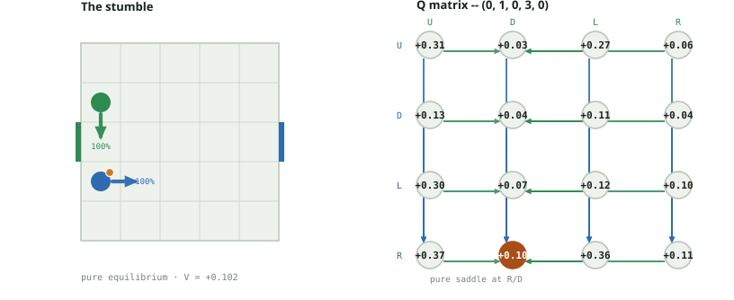
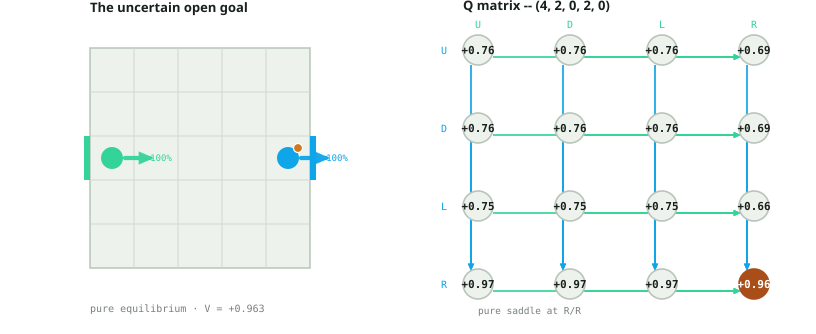
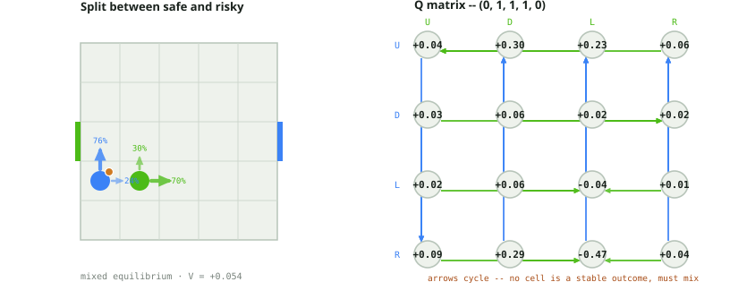
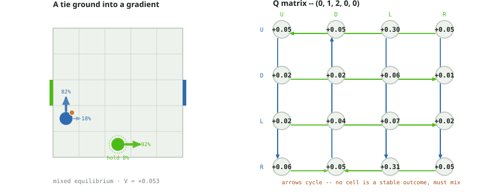
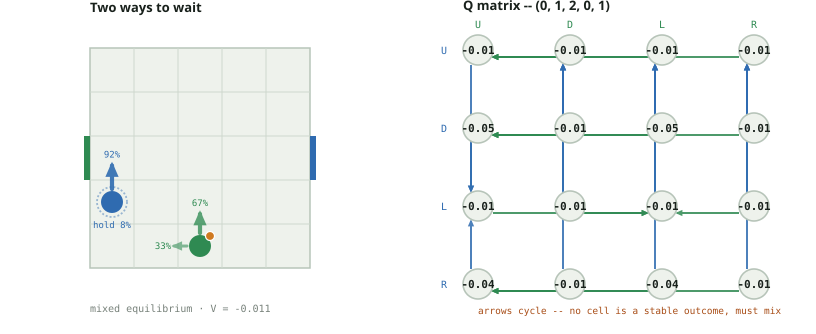
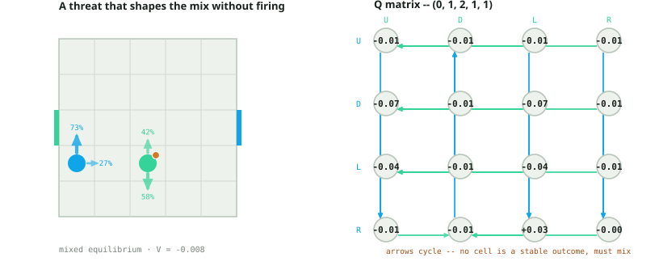

Soccer Markov Nash · movement-slip board
5 by 5 board; a single goal row at y=2 (smaller and differently shaped than
the 7 by 5, three-goal-row canonical board); simultaneous U/D/L/R; the same
deterministic A10 carrier-wins-contests resolution rule, with one addition:
after both players choose, each player's own chosen action is independently
replaced by a uniformly random action with probability 0.15, before the
deterministic resolution rule runs on whatever pair of actions results. This
is per-player execution noise layered on top of A10's rule, not a new
contest-resolution rule of its own -- and because it applies independently to
both players, game.transitions() on this board routinely returns
a dozen or more weighted outcomes for a single joint action, not one.
Headline finding, inverted from the A10 board:
scripts/a10_cases.py's own headline is that every stage game on the
deterministic board is pure -- zero mixed equilibria across all 2380 states.
Here, 52 of this board's 1200 states (~4.3%) have a genuine mixed
equilibrium: a real fractional Nash strategy, not a tie-break convention --
the third-richest source of real randomization among this project's four
non-A10 board variants. The mechanism is plain once you trace it: a small
chance of stumbling into an unintended cell can undermine what looked like a
completely safe pure action, so a player may prefer to split probability
between two actions whose slip-risk profiles trade off against each other,
rather than commit to one action whose worst-case slip outcome is bad. Four
of the six cases below are drawn from that 52, each one verified fresh
against this script's own solve and traced back to the actual weighted
branches game.transitions() returns.
The other two cases below are clean pure equilibria, chosen to put the raw slip mechanic on a board diagram by itself: one shows a completely safe pure action carrying a real, quantified chance of losing the ball to nothing but the carrier's own random stumble, with the full weighted outcome distribution shown, not just the modal branch; the other shows an otherwise certain goal (unconditional on the A10-deterministic board) reduced to an 88.75% chance by the carrier's own execution noise alone.
Interactive explorer · Audit and reproduction details
State (0, 1, 0, 3, 0) · player 0 carries the ball · V = +0.101999 · Pure equilibrium
Open this position in the interactive explorer →
Security-tied alternatives (not probabilities): P0 R · P1 D
Player 0 carries the ball at (0,1); the defender waits two cells up the same column at (0,3), with the board's only goal row (y=2) sitting directly between them. Player 0's maximin action R is completely safe under plain resolution -- it steps sideways to (1,1), nowhere near the defender's column -- and the defender's minimax reply D simply advances toward the goal row without contesting anything. Verified below: the modal branch of (R, D), weight 0.8875 = 0.85 + 0.15/4 (the probability both players' intended actions survive their own independent slip roll), resolves exactly this way, to (1,1,0,2,0) -- no contest at all. But slip is independent per player: with weight 0.0375 x 0.8875 = 0.03328 (verified below, the single largest of the remaining branches), player 0's own R is silently replaced by U instead -- sending the carrier to (0,2), directly into the goal row and into the cell the defender's intended D is also converging on from (0,3). Player 0 physically ends up there uncontested -- the defender stays put at (0,3) in this branch -- yet the A10 rule scripts/a10_cases.py's own 'Pinned in the corner' case already documents still hands the ball to the loser of that contest, the defender, away from player 0. A real, quantified 3.328% chance of losing the ball to nothing but player 0's own random stumble, not to anything the defender chose to do.
Full outcome distribution for (R, D) — every branch game.transitions() actually returns for this one joint action, not just the modal outcome shown in the table below (all 16 branches sum to 1.000000):
| probability | next state | reward | note |
|---|---|---|---|
| 0.78766 | (1, 1, 0, 2, 0) | (0, 0) | |
| 0.03328 | (0, 2, 0, 3, 1) | (0, 0) | ball flips to player 1 |
| 0.03328 | (0, 0, 0, 2, 0) | (0, 0) | |
| 0.03328 | (0, 1, 0, 2, 0) | (0, 0) | |
| 0.03328 | (1, 1, 0, 4, 0) | (0, 0) | |
| 0.03328 | (1, 1, 0, 3, 0) | (0, 0) | |
| 0.03328 | (1, 1, 1, 3, 0) | (0, 0) | |
| 0.00141 | (0, 2, 0, 4, 0) | (0, 0) | |
| 0.00141 | (0, 2, 0, 3, 0) | (0, 0) | |
| 0.00141 | (0, 2, 1, 3, 0) | (0, 0) | |
| 0.00141 | (0, 0, 0, 4, 0) | (0, 0) | |
| 0.00141 | (0, 0, 0, 3, 0) | (0, 0) | |
| 0.00141 | (0, 0, 1, 3, 0) | (0, 0) | |
| 0.00141 | (0, 1, 0, 4, 0) | (0, 0) | |
| 0.00141 | (0, 1, 0, 3, 0) | (0, 0) | |
| 0.00141 | (0, 1, 1, 3, 0) | (0, 0) |

| P0 / P1 | U | D | L | R |
|---|---|---|---|---|
| U | 0.310564 | 0.031012 | 0.270433 | 0.058908 |
| D | 0.132332 | 0.036475 | 0.105247 | 0.036521 |
| L | 0.302715 | 0.074399 | 0.116725 | 0.096705 |
| R | 0.374610 | 0.101999 | 0.355442 | 0.113292 |
| P0 / P1 | U | D | L | R |
|---|---|---|---|---|
| U | (0, 2, 0, 4, 0) | (0, 2, 0, 3, 1) | (0, 2, 0, 3, 0) | (0, 2, 1, 3, 0) |
| D | (0, 0, 0, 4, 0) | (0, 0, 0, 2, 0) | (0, 0, 0, 3, 0) | (0, 0, 1, 3, 0) |
| L | (0, 1, 0, 4, 0) | (0, 1, 0, 2, 0) | (0, 1, 0, 3, 0) | (0, 1, 1, 3, 0) |
| R | (1, 1, 0, 4, 0) | (1, 1, 0, 2, 0) | (1, 1, 0, 3, 0) | (1, 1, 1, 3, 0) |
State (4, 2, 0, 2, 0) · player 0 carries the ball · V = +0.962780 · Pure equilibrium
Open this position in the interactive explorer →
Security-tied alternatives (not probabilities): P0 R · P1 R
The direct analogue of scripts/a10_cases.py's 'The open goal': player 0 sits at the right wall in the board's only goal row, ball in hand, defender at the opposite wall far too distant to interfere this turn. R is still the unique maximin/minimax action for both players. On the A10-deterministic board the identical geometry scores with certainty (V = 1.0 exactly). Here it does not: V = 0.962780, and the modal branch of R against every one of the defender's four replies is identical -- weight 0.8875 = 0.85 + 0.15/4, verified below -- because scoring depends only on player 0's own action surviving its own slip roll, not on anything the far-off defender does. An unmarked, wall-pinned carrier in the goal row still only scores 88.75% of the time on a single push; the remaining 11.25% is spread across a dozen small branches where the push itself misfires into a neighboring cell instead of over the line.

| P0 / P1 | U | D | L | R |
|---|---|---|---|---|
| U | 0.760946 | 0.762035 | 0.760140 | 0.692152 |
| D | 0.762035 | 0.760946 | 0.760140 | 0.692152 |
| L | 0.753195 | 0.753195 | 0.754705 | 0.660391 |
| R | 0.971799 | 0.971799 | 0.971753 | 0.962780 |
| P0 / P1 | U | D | L | R |
|---|---|---|---|---|
| U | (4, 3, 0, 3, 0) | (4, 3, 0, 1, 0) | (4, 3, 0, 2, 0) | (4, 3, 1, 2, 0) |
| D | (4, 1, 0, 3, 0) | (4, 1, 0, 1, 0) | (4, 1, 0, 2, 0) | (4, 1, 1, 2, 0) |
| L | (3, 2, 0, 3, 0) | (3, 2, 0, 1, 0) | (3, 2, 0, 2, 0) | (3, 2, 1, 2, 0) |
| R | (-1, -1, -1, -1, 0) | (-1, -1, -1, -1, 0) | (-1, -1, -1, -1, 0) | (-1, -1, -1, -1, 0) |
State (0, 1, 1, 1, 0) · player 0 carries the ball · V = +0.053951 · Mixed equilibrium
Open this position in the interactive explorer →
Security-tied alternatives (not probabilities): P0 U · P1 R
Player 0 carries the ball at (0,1), one cell west of the defender at (1,1). Solved on this identical board with slip set to 0, this exact state is a flat all-zero tie -- verified separately, every one of the sixteen Q-matrix cells is exactly 0.0, the same 'dead zone' shape scripts/a10_cases.py's own case 8 documents as the board's most common configuration. Slip breaks that tie into a real gradient. Player 0's R aims straight at the defender's own square: if the defender replies L, the two swap -- verified below, (R, L)'s modal branch (weight 0.78766) resolves to (1,1,0,1,1), a genuine ball-losing swap under the A10 collision rule, dragging R's worst case to -0.469345. U never approaches the defender and caps out at +0.058185 in its best case, +0.044092 in its worst. Neither dominates: U is safe but capped, R is risky but has a far higher ceiling against every column except L. The equilibrium mixes 76.5% U / 23.5% R for player 0 because the column's own equilibrium mixes 30.0% U / 70.0% R and never plays the crushing L -- a pure U-only defense would let row exploit predictably by leaning further into R, and a pure L-only defense wastes column's own tempo on a move row's mix rarely walks into. The mixed value, 0.053951, sits strictly between the pure security floor (U alone, 0.044092) and the best column could otherwise hold row to (0.058185) -- real value squeezed out of a threat that, at equilibrium, is never even tested against its worst reply.

| P0 / P1 | U | D | L | R |
|---|---|---|---|---|
| U | 0.044092 | 0.301917 | 0.229879 | 0.058185 |
| D | 0.027263 | 0.064151 | 0.020165 | 0.017932 |
| L | 0.021084 | 0.063720 | -0.042986 | 0.014326 |
| R | 0.085997 | 0.292869 | -0.469345 | 0.040191 |
| P0 / P1 | U | D | L | R |
|---|---|---|---|---|
| U | (0, 2, 1, 2, 0) | (0, 2, 1, 0, 0) | (0, 2, 0, 1, 0) | (0, 2, 2, 1, 0) |
| D | (0, 0, 1, 2, 0) | (0, 0, 1, 0, 0) | (0, 0, 0, 1, 0) | (0, 0, 2, 1, 0) |
| L | (0, 1, 1, 2, 0) | (0, 1, 1, 0, 0) | (0, 1, 1, 1, 1) | (0, 1, 2, 1, 0) |
| R | (1, 1, 1, 2, 0) | (1, 1, 1, 0, 0) | (1, 1, 0, 1, 1) | (1, 1, 2, 1, 0) |
State (0, 1, 2, 0, 0) · player 0 carries the ball · V = +0.052696 · Mixed equilibrium
Open this position in the interactive explorer →
Security-tied alternatives (not probabilities): P0 U · P1 R
Defender at (2,0) is two cells away diagonally, seemingly out of reach this turn. Solved with slip set to 0 on the identical board, this state is again a flat all-zero tie -- nothing in the Q matrix distinguishes any of the sixteen cells, and U wins only by tie-break order. Under slip = 0.15 the near-tie survives almost intact but not exactly: U's worst case (0.051413, against column U) and R's worst case (0.045186, against column D) differ by well under a percent of the state's own value -- too close for either to weakly dominate. The column's own equilibrium mixes 8.1% D / 91.9% R, almost entirely R, because L is the single biggest threat left in the matrix (0.295145 and 0.312405, the two largest entries either row reaches) and column avoids feeding it; row in turn mostly plays U (81.6%) and leans into R (18.4%) only against the sliver of D column still keeps in its own mix. This is one of the smallest, least dramatic members of the board's 52 mixed states -- a near-tie the slip noise tips just far enough to require real randomization instead of a tie-break convention.

| P0 / P1 | U | D | L | R |
|---|---|---|---|---|
| U | 0.051413 | 0.054394 | 0.295145 | 0.052547 |
| D | 0.017290 | 0.017172 | 0.063509 | 0.014415 |
| L | 0.017678 | 0.044092 | 0.067072 | 0.016683 |
| R | 0.059727 | 0.045186 | 0.312405 | 0.053355 |
| P0 / P1 | U | D | L | R |
|---|---|---|---|---|
| U | (0, 2, 2, 1, 0) | (0, 2, 2, 0, 0) | (0, 2, 1, 0, 0) | (0, 2, 3, 0, 0) |
| D | (0, 0, 2, 1, 0) | (0, 0, 2, 0, 0) | (0, 0, 1, 0, 0) | (0, 0, 3, 0, 0) |
| L | (0, 1, 2, 1, 0) | (0, 1, 2, 0, 0) | (0, 1, 1, 0, 0) | (0, 1, 3, 0, 0) |
| R | (1, 1, 2, 1, 0) | (1, 1, 2, 0, 0) | (1, 1, 1, 0, 0) | (1, 1, 3, 0, 0) |
State (0, 1, 2, 0, 1) · player 1 carries the ball · V = -0.010629 · Mixed equilibrium
Open this position in the interactive explorer →
Security-tied alternatives (not probabilities): P0 U · P1 L
Player 1 carries the ball at (2,0); player 0 defends from (0,1), diagonally two cells away. On the identical board with slip set to 0 this state's Q matrix is exactly all zero -- both players are too far apart to touch this turn, and the tie again defaults to U for both. Under slip the matrix turns uniformly negative for the defender (every one of the sixteen cells sits between -0.007 and -0.050, unsurprising since the opponent already has the ball) but is not flat: D and R both risk closing the distance in ways the matrix punishes hard (D's worst case is -0.049664, R's is -0.042770, both against column U), so the defender's equilibrium support drops them almost entirely and mixes 91.7% U / 8.3% L instead -- the two actions that hold position rather than lunge. U and L are close enough (worst cases -0.010669 versus -0.010182) that once slip has smoothed the sixteen-cell matrix neither cleanly dominates, so the solver genuinely mixes between them rather than picking one by tie-break order.

| P0 / P1 | U | D | L | R |
|---|---|---|---|---|
| U | -0.010669 | -0.007582 | -0.010548 | -0.007171 |
| D | -0.049664 | -0.013226 | -0.047652 | -0.012517 |
| L | -0.010182 | -0.009549 | -0.011524 | -0.007209 |
| R | -0.042770 | -0.013120 | -0.042632 | -0.013417 |
| P0 / P1 | U | D | L | R |
|---|---|---|---|---|
| U | (0, 2, 2, 1, 1) | (0, 2, 2, 0, 1) | (0, 2, 1, 0, 1) | (0, 2, 3, 0, 1) |
| D | (0, 0, 2, 1, 1) | (0, 0, 2, 0, 1) | (0, 0, 1, 0, 1) | (0, 0, 3, 0, 1) |
| L | (0, 1, 2, 1, 1) | (0, 1, 2, 0, 1) | (0, 1, 1, 0, 1) | (0, 1, 3, 0, 1) |
| R | (1, 1, 2, 1, 1) | (1, 1, 2, 0, 1) | (1, 1, 1, 0, 1) | (1, 1, 3, 0, 1) |
State (0, 1, 2, 1, 1) · player 1 carries the ball · V = -0.007576 · Mixed equilibrium
Open this position in the interactive explorer →
Security-tied alternatives (not probabilities): P0 U · P1 D
Player 1 carries the ball at (2,1); player 0 defends from (0,1), two cells away in the same row. R is not merely a desperate lunge here: verified below, (R, L) resolves with modal weight 0.78766 to (0,1,1,1,0) -- a genuine contested-cell swap in the defender's favor, stealing the ball back to player 0, the same loser-keeps-the-ball mechanic as case 1, running the other way. That single verified branch is why R carries a real positive entry, +0.033002, at column L -- the only positive cell anywhere in this defending player's Q matrix. In equilibrium, though, column never actually plays L (support is 42.0% U / 58.0% D), so that steal is a threat baked into the matrix's shape rather than something that fires at equilibrium; the real driver of the 72.75% / 27.25% row split is that R is fractionally better than U against column's U (-0.006405 vs -0.008014) while U is better against column's D (-0.007258 vs -0.008424) -- a genuine trade-off neither action wins outright.

| P0 / P1 | U | D | L | R |
|---|---|---|---|---|
| U | -0.008014 | -0.007258 | -0.005855 | -0.006198 |
| D | -0.066891 | -0.014681 | -0.065762 | -0.014536 |
| L | -0.042498 | -0.012116 | -0.040762 | -0.011540 |
| R | -0.006405 | -0.008424 | 0.033002 | -0.004866 |
| P0 / P1 | U | D | L | R |
|---|---|---|---|---|
| U | (0, 2, 2, 2, 1) | (0, 2, 2, 0, 1) | (0, 2, 1, 1, 1) | (0, 2, 3, 1, 1) |
| D | (0, 0, 2, 2, 1) | (0, 0, 2, 0, 1) | (0, 0, 1, 1, 1) | (0, 0, 3, 1, 1) |
| L | (0, 1, 2, 2, 1) | (0, 1, 2, 0, 1) | (0, 1, 1, 1, 1) | (0, 1, 3, 1, 1) |
| R | (1, 1, 2, 2, 1) | (1, 1, 2, 0, 1) | (0, 1, 1, 1, 0) | (1, 1, 3, 1, 1) |